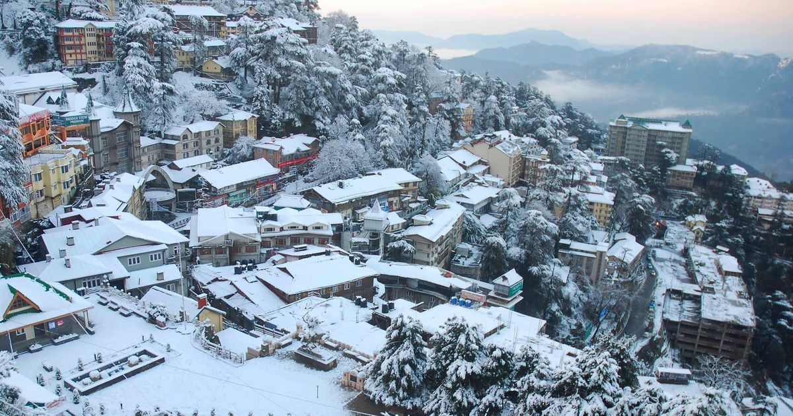

Introduction
Shimla, one of India's most famous hill stations, derives its name from Goddess Shyamala, an incarnation of Goddess Kali, the deity of power and wrath. However, unlike its name, Shimla is a perfect heaven for the ones in search of tranquility. Nature has blessed this capital city with innumerable gifts and man has used them to make Shimla one of India's best locales.
Location
Perched at an altitude of 2159 m above sea level, Shimla is located towards the southern parts of the north Indian state of Himachal Pradesh. It is the state capital and is at a distance of 343 km from Delhi, 260 km from Manali, and 119 km from Chandigarh. The temperature range is not very high and the maximum temperature rarely crosses 25°C during summers. Winters are cold due to the chilly winds from the upper Himalayas. Around Christmas, Shimla experiences snowfall. The best season to visit Shimla is between September and November.
History
The British discovered Shimla in the form of a little village in 1819. Until then, it was a part of the Nepalese kingdom. It was during Lord William Bentinck's time that Shimla was truly acquired by the Government of India. The British persuaded the local Raja to part with the land in 1830, and the settlement became the subcontinent's most fashionable summer resort. In 1864, Shimla was declared the summer capital of India. After the independence of India, Shimla became the capital of Punjab until 1966, when it came under Himachal Pradesh.
Best Time to Vist
Shimla, the beautiful hill station of Himachal Pradesh is charming all around the year. Every season brings about its unique beauty. Summers are pleasant and last from May to June. The lush green valleys are scenic and perfect for adventures. In winters, the entire landscape gets draped in powdery snow. The snowfall starts from late November and lasts till February. Snow adventures in the slopes brings crowds and the beauty is ethereal. In the rainy months; July to September, the hill station retains its charm and allures visitors for the serene tourist free ambiance. Shimla is pleasant every season. According to your preferences visit the capital city of hilly state nestled in the lap of Himalayas.
How to Reach
BY AIR - The nearest airport to reach Shimla is the Jabarhatti Airport. The nearest domestic airport is located 23 kilometers from the capital city of Himachal Pradesh. The nearest international airport is Indira Gandhi International Airport in New Delhi at distance of 344 kilometers. From the air terminal hire a cab, private taxi or take a bus to reach the scenic hill station. BY RAIL - Shimla Railway Station is the nearest railhead, 1 kilometer from the city center. The railway station receives train of narrow gauge only. The broad head railway is in Kalka, 76 kilometers away. Another well connected option is the Chandigarh railway station, 110 kilometers away. Avail cabs, taxis or state owned buses to get to the hill retreat. BY ROAD - Shimla being the capital of Himachal Pradesh is well connected via road. The highway connects it to the other places of the state. Get options from cities, railway station and the airport. AC, non AC and HPTDC buses are the frequent option. Overnight buses are the best option to travel from Delhi. Chandigarh and Kalka are the other important centers to reach the hill station.
Tourist Attractions
The hub of Shimla is the Mall, which runs along the Ridge and is crowded with tourists. It is the city's most famous shopping center, with shops selling all items, from clothes to junk food. The Ridge is a large open space in the heart of the town and presents excellent views of the mountain ranges. Most of Shimla's landmarks are located here. The Mall further joins the Ridge at the 'Scandal Point' of Kipling's Shimla, where a statue of the nationalist leader Lala Lajpat Rai has been erected. The six-storeyed Vice-Regal Lodge or Rashtrapati Niwas, about 4.5 km from Scandal Point, attracts many visitors. It was built in 1888 and was formerly the residence of Lord Dufferin, the British Viceroy. The style of architecture is English Renaissance, the masonry of the walling is light blue limestone and the wrought stonework is done in sandstone in a beautiful light gray tint. It has magnificent lawns and houses the Indian Institute of Advanced Study. Nearby is the Himalayan aviary that has a good collection of birds, including the Monal pheasant, Himachal's state bird. About 2.5 km from Scandal Point is the State Museum, which has a good collection of statues, miniatures, coins and photos from in and around Himachal Pradesh. It was built in 1974. Another of Shimla's major landmarks is the Christ Church and St. Michael's Cathedral. It is the second oldest church in Northern India built between 1846 and 1857. It is located just off the Mall, below the District Center and is known for its stained glass windows. Jhaku temple, dedicated to Hanumanji, the attendant of Lord Rama, is to the east of the town center, near the highest point of the Shimla Ridge. It is at a height of 8048 feet above sea level and offers a panoramic view of the city. The temple just below the Grand Hotel is the temple dedicated to Shyamala Devi, an incarnation of Goddess Kali. Southeast from Jhaku is the long spur of Chotta Shimla, with Barnes Court. Once the residence of the Governor General of Punjab, it is now the official residence of the Governor of Himachal Pradesh. About 4 km from the Ridge, a sprightly stream flows through the Glen forests at an altitude of 1830 meters. It is a secluded picnic spot. Beyond the Glen is Annandale, another picnic spot. It is covered with deodar forests and was once the playgrounds of Shimla, where racing, polo and cricket entertained the Britishers. Elysium Hill, on the road leading through Lakkar Bazaar, houses the famous Auckland House, the former residence of Viceroy Lord Auckland. It is a well-known girls' school now. Nearby is the Stirling Castle, now an orphanage for the Tibetan children and a center for the Tibetan exiles who have settled locally..
Places Around Shimla
Rampur has the Padam Palace built in 1925. The whole area is a maze of lanes, shops and temples. In the month of November, the Lavi Fair is organized here. On the Mahasu range, at Charabra, 13 km from Shimla, is the Wild Flower Hall situated at an altitude of 2,498 m. Nestling among picturesque sylvan surroundings, the Wild Flower Hall commands a breathtaking view of the snows. A major fire damaged it in 1993. Serving as a hotel today, it attracts many tourists who wish to revisit the grandeur of a bygone era. About six miles from the Shimla Church, in Koti, lay the village of Mashobra, at a height of 2149 m. A place of unique beauty, Mashobra is an ideal interlude beneath the oaks and the pines. Featuring beautiful gardens spattered with the daffodils, hyacinths, asphodels and celandines, it is a popular weekend resort, dotted with delightful villas and innumerable picnic spots. From here, a track leads down to Sipur, which is an exquisite glade shaded by ancient deodar trees. A fair is held here every April/May. About 3 km from Mashobra is the lovely resort of Craignano. At a distance of 5 km from Shimla is Summer Hill, a quiet suburb with peaceful environs ideal for secluded walks. About 2 km from Summer Hill are the Chadwick Falls, a silent gorge frequently visited by picnickers. Four kilometers from Shimla is Bihargaon, a village known for its splendid Himachali architecture. At a distance of 6 km from Shimla is the Prospect Hill. At 2125 m and crowned by a temple dedicated to Kamna Devi, the hill offers breathtaking views of the area. Another temple dedicated to Tara Devi is located at a distance of 3 km from Shimla. About 12 km from Shimla, on the Kalka Road is Kasauli. Kufri, at distance of 16 km from Shimla and at an altitude of 2510 m above sea level, is a site offering some famous hikes and wonderful snow for skiing. An enjoyable walk leads up to the Mahasu Peak. The Himalayan Nature Park here has a good collection of animals and birds found in the region. Narkanda, 64 km from Shimla, offers wonderful slopes for skiing. At an elevation of 2708 m, it has dense pine forests. Hatu peak, 8 km from Narkanda, provides a striking panorama of the plains below. Chail, 43 km from Shimla, is a lush green setting and was the former capital of the Patiala State. It has the world's highest cricket ground at a height of 2250 m, built in 1893. It is also a hiker's paradise and there is a wildlife sanctuary at a distance of 3 km from here. Sarahan is a small village worth visiting. It provides a spectacular view of Shrikhand Mahadev and hiking opportunities to the nearby villages such as Ranwin and Bashal Peak. The Bhimakali temple, dedicated to Goddess Durga, is the finest example of Himachali architecture. Naldehra, at an altitude of 2050 m and 23 km from Shimla, houses the oldest and the highest golf course in India. In the middle of the course is a temple, Mahunag Mandir. It was a favorite pastime spot of Lord Curzon. Tattapani, 51 km from Shimla, is a spot well known for hot sulfurous springs.